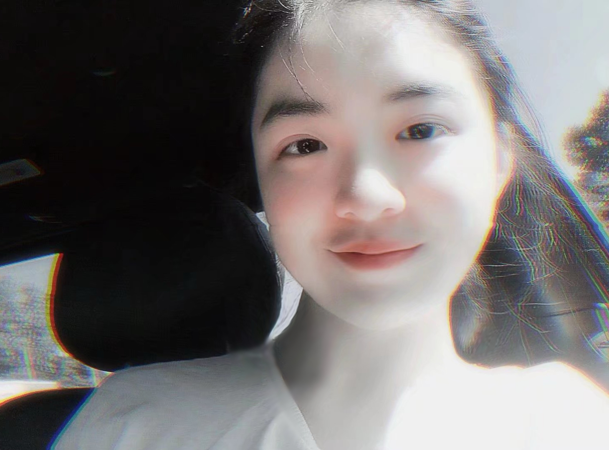

About me
Hello! I am Zhiyin Li, a student who had the wonderful opportunity to study at Jönköping University for two enriching years. During my time there, I delved into the world of knowledge and embraced the challenges and joys of academic life. On a personal note, my heart beats for animals, especially the ones that are cute and beautiful. Cats, dogs, and a myriad of other creatures have a special place in my heart. Their innocence and unconditional love never fail to bring a smile to my face. I find solace in the companionship of these furry friends and appreciate the lessons they teach us about love, loyalty, and compassion. Besides my love for animals, I am passionate about instruments and exercising. These pursuits not only bring me immense joy but also allow me to express my creativity and explore the depths of my imagination.I believe in the power of continuous learning and the importance of kindness in making the world a better place. Life is a fascinating journey, and I am excited to explore its various facets, broaden my horizons, and make meaningful connections with people who share my passions and values.
About my cources
- Web and user interface design
- IOS development
- Foundations of programming
- Interaction design
- Marketing communication
- Content design of new media